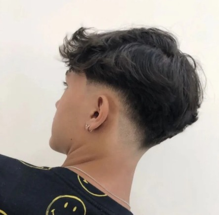

Lisos
Low Fade
O low fade é um corte famoso nos cabelos lisos.
Moicano

O moicano está se tornando o corte mais famoso no cabelo liso.
Corte Social
O corte social é um clássico atemporal que nunca sai de moda e dispensa apresentações!